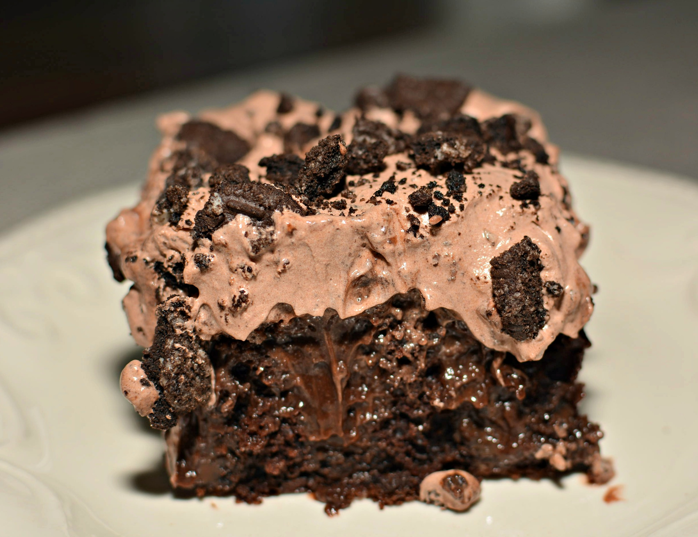

Granny's Dirt Cake

Description
Dirt cake might not sound appetizing but it's actually the easiest and most delicious dessert. An Oreo crust is topped with a cream cheese pudding mixture and then sprinkled with more Oreos for good measure. It's an easy no bake dessert we wish we kept in our refrigerators all year. This cake version is very similar to Dirt Pudding which is made in individual cups and chocolate pudding -Makinze Gore
Ingredients
- 1 package oreos
- 4 tbsp butter, melted
- 1 box instant vanilla pudding
- 1.5 cups cold milk
- 1 block cream cheese, softened
- 0.5 cups powdered sugar
- 1 cup heavy cream
Directions
- Finely crush Oreos in a food processor. Add all but ¾ cup to a large bowl. Add melted butter to bowl and stir until mixture starts to hold together. Pour mixture into 9”-x-9” baking dish and pack into an even layer.
- In a medium bowl, whisk together pudding mix and milk until thickened, then refrigerate for 10 minutes to firm up.
- In a large bowl using a hand mixer, beat cream cheese and powdered sugar together until no lumps remain.
- In another large bowl, beat cream until stiff peaks form.
- Fold pudding into cream cheese mixture, then fold in whipped cream until just combined. Pour mixture over Oreo crust and smooth with an offset spatula. Top with reserved ¾ cup crushed Oreos.
- Refrigerate until well chilled, at least 3 hours and up to overnight.